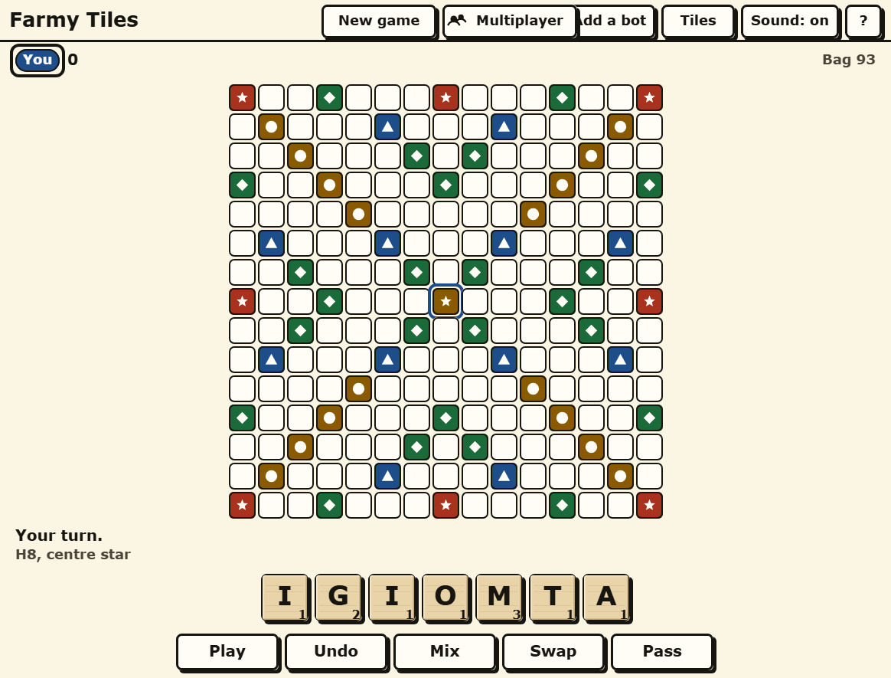

Farmy Tiles — a free crossword tile board game in your browser
The whole board, the real bag of tiles, and a link that puts somebody else on the other side of it.

It is the real game
Fifteen by fifteen. The standard hundred-tile bag with the standard letter values and two blanks. Double and triple letters, double and triple words, each spent only on the turn it is covered. Fifty points for laying all seven tiles at once. Exchange, pass, and the game ends the way it should - when the bag is empty and somebody goes out, with everybody's leftover tiles settled up against them.
Every word you make is checked, including the ones you make sideways by accident. If a play is not legal the game says which rule it broke rather than simply refusing to move.
Three ways to put a tile down
Drag it. Or tap the tile and then tap the square. Or click a square and type. All three do the same thing, because a mouse, a thumb and a keyboard are three different hands and a game that only understands one of them is a game two people out of three put down.
Play it with somebody, over a link
Two to four people, one board. Send a link or read out a six-character code - it has no O, I, L, S, Z or B in it, so it survives being said down a telephone - and everybody sees the same board, the same bag and the same scores.
The browsers talk directly to each other. There is no game server, nothing is stored anywhere, and the room stops existing when the last tab closes. If somebody's connection drops, the game does not die with it: the match is a record of what has been played rather than a live state somebody is holding, so whoever is left carries on.
Built for eyes that are not twenty any more
The same brief as the rest of the studio's word games. Nothing on the screen is under 18px and nothing you can press is under 48px. Text clears AAA contrast rather than AA - 7:1, not 4.5:1 - because contrast is the first thing to go and the standard's lower bar was written for younger eyes.
Nothing is said with colour alone. Every premium square carries a shape as well as a colour - a star, a diamond, a triangle, a circle - so a red triple and a green double are still different squares to somebody who cannot tell red from green. Every tile carries its value in the corner.
And there is no clock. Not on your turn, not on the game. A word game with a timer on it is a test, and this is not one.
Alone, if you like
On your own it is the solitaire version: the same board, the same bag, and the question of how much you can get out of it before the tiles run out.
No account, no sign-in, nothing kept
There is nothing to install, nothing to register for and no email to give. Open the page and the board is there. It runs on a work laptop that blocks everything else, and on a phone.
Somebody played it on camera
Amelia, who fronts the studio's channel, plays these in one sitting and is not employed to be nice about them. She plays JOWED for 48 without knowing what it means, then swaps two tiles in a game she is playing on her own. Watch it on YouTube →
If you want words without the tiles, Farmy Crosswords is four puzzle games on one page - Farmy Five, Farmy Hive, Connections and Strands - with the same large type and the same shared rooms.
More like this: 2-player games online · Multiplayer browser games · Board games with friends · Free word games